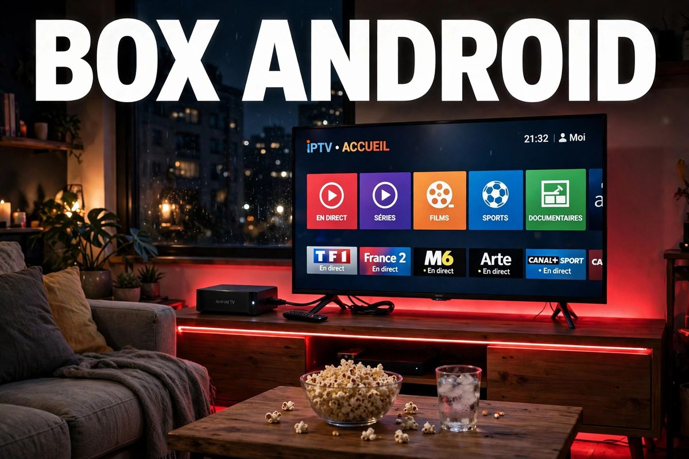

Installation Android
Installer l’IPTV sur Android
Smartphone, tablette, box Android ou Android TV : quelle application choisir, comment l’installer et comment configurer votre abonnement IPTV pas à pas.

L’IPTV sur Android : la plateforme la plus souple
Android est la plateforme la plus ouverte et la plus complète pour regarder l’IPTV. Smartphone, tablette, box Android, téléviseur Android TV ou Google TV : tous ces appareils donnent accès au Google Play Store, aux meilleurs lecteurs IPTV et à de nombreux réglages pour adapter la lecture à votre connexion. Avec un seul abonnement Sunday IPTV, vous pouvez regarder vos chaînes sur le téléviseur du salon, puis continuer sur votre téléphone dans le train.
Ce guide vous explique comment choisir la bonne application selon votre appareil, comment l’installer depuis le Play Store ou à partir d’un fichier APK, comment connecter votre abonnement et comment obtenir une lecture fluide, même avec une connexion moyenne.
Android, Android TV ou Google TV : quelles différences ?
Toutes ces versions partagent la même base, mais l’interface et les applications disponibles changent.
- Android (smartphone et tablette) : interface tactile, applications conçues pour l’écran du téléphone. Idéal pour regarder en déplacement ou dans une autre pièce.
- Android TV : version pensée pour la télécommande, présente sur de nombreuses box (Xiaomi Mi Box, Nvidia Shield…) et sur des téléviseurs Sony, Philips ou TCL.
- Google TV : interface plus récente d’Android TV, présente sur les téléviseurs récents et les appareils Chromecast avec Google TV.
- Box Android « génériques » : boîtiers vendus en ligne qui utilisent parfois une version d’Android pour tablette. Elles fonctionnent, mais l’interface est moins adaptée à la télécommande et la qualité varie beaucoup d’un modèle à l’autre.
Pour vérifier votre version, ouvrez Paramètres, puis À propos du téléphone (ou Préférences de l’appareil, puis À propos sur une box). Une version récente d’Android garantit une meilleure compatibilité avec les applications.
Ce qu’il vous faut avant de commencer
- un appareil Android à jour (lancez les mises à jour système et celles du Play Store) ;
- un compte Google configuré sur l’appareil ;
- une connexion internet : 10 Mb/s pour la HD, 25 Mb/s pour la Full HD, 40 Mb/s pour la 4K ;
- vos identifiants Sunday IPTV : adresse du serveur, nom d’utilisateur et mot de passe (Xtream Codes), ou lien de playlist M3U ;
- sur une box, une connexion Ethernet si possible, pour une stabilité maximale.
Quelle application choisir ?
Voici les lecteurs que nous recommandons avec Sunday IPTV, selon l’appareil :
- TiviMate (box Android TV, téléviseurs Android TV et Google TV) : le lecteur le plus complet sur grand écran, avec un guide des programmes très lisible, des favoris, l’enregistrement et le replay. Il est conçu pour la télécommande et ne s’installe pas sur les smartphones.
- IPTV Smarters Pro (smartphone, tablette, box) : simple, clair, avec des rubriques séparées pour le direct, les films et les séries. Un excellent choix pour débuter.
- Autres lecteurs compatibles Xtream Codes ou M3U : il en existe de nombreux sur le Play Store. Choisissez une application bien notée et mise à jour récemment.
- VLC : lecteur vidéo universel, gratuit, capable d’ouvrir une playlist M3U. Pratique pour un test rapide, mais sans guide des programmes ni catalogue organisé.
Pour faire votre choix, posez-vous trois questions. Sur quel écran regarderez-vous le plus souvent : la télé du salon ou votre téléphone ? Avez-vous besoin du guide des programmes et du replay, ou seulement des films et séries à la demande ? Préférez-vous une interface très simple ou un maximum de réglages ? Sur une télé, TiviMate l’emporte presque toujours. Sur un téléphone ou une tablette, IPTV Smarters Pro offre le meilleur équilibre entre simplicité et fonctionnalités. Rien ne vous empêche d’installer les deux et de garder celle que vous préférez après quelques jours d’utilisation.
La disponibilité des applications sur le Play Store évolue : si l’une d’elles est introuvable dans votre pays, nous pouvons vous indiquer une alternative ou vous envoyer un lien d’installation fiable.
Méthode 1 : installer depuis le Google Play Store
C’est la méthode la plus simple et la plus sûre, à privilégier dès que l’application est disponible.
- Ouvrez le Google Play Store.
- Recherchez l’application choisie, par exemple TiviMate IPTV Player sur une box Android TV, ou IPTV Smarters Pro sur un smartphone.
- Vérifiez le nom de l’éditeur et les avis, puis sélectionnez Installer.
- Une fois l’installation terminée, sélectionnez Ouvrir.
Les applications installées depuis le Play Store se mettent à jour automatiquement, ce qui vous garantit toujours la dernière version.
Méthode 2 : installer un fichier APK
Si l’application n’est pas disponible sur le Play Store de votre appareil, vous pouvez l’installer à partir d’un fichier APK, le format d’installation d’Android. Utilisez uniquement des fichiers provenant de l’éditeur officiel ou du lien que nous vous fournissons.
Sur un smartphone ou une tablette
- Téléchargez le fichier APK avec votre navigateur (Chrome par exemple).
- Ouvrez la notification de téléchargement ou l’application Fichiers, puis touchez le fichier.
- Android vous demande d’autoriser cette source : touchez Paramètres, activez Autoriser cette source, puis revenez en arrière.
- Touchez Installer, puis Ouvrir.
Sur une box Android TV ou Google TV
- Installez l’application Downloader depuis le Play Store.
- Allez dans Paramètres, puis Applications, puis Sécurité et restrictions (ou Sources inconnues selon les modèles), et autorisez Downloader.
- Ouvrez Downloader, entrez le lien d’installation que nous vous avons envoyé, puis sélectionnez Go.
- Installez l’application, puis supprimez le fichier d’installation pour libérer de l’espace.
Configurer TiviMate sur une box ou une télé Android TV
- Ouvrez TiviMate et sélectionnez Ajouter une playlist.
- Choisissez Code Xtream.
- Entrez l’adresse du serveur, votre nom d’utilisateur et votre mot de passe.
- Sélectionnez Suivant : TiviMate affiche le nombre de chaînes, de films et de séries trouvés.
- Donnez un nom à la playlist, par exemple « Sunday IPTV », puis sélectionnez Terminé.
- Patientez quelques minutes pendant le chargement du guide des programmes.
Pour personnaliser l’affichage, ouvrez les réglages : vous pouvez masquer les groupes de chaînes inutiles, créer vos favoris et choisir le lecteur vidéo. Notre guide TiviMate détaille toutes les options.
Configurer IPTV Smarters Pro sur smartphone ou tablette
- Ouvrez l’application et acceptez les conditions d’utilisation.
- Choisissez Login with Xtream Codes API.
- Remplissez les champs : un nom de votre choix, votre nom d’utilisateur, votre mot de passe et l’URL du serveur.
- Touchez Add User : l’application charge vos chaînes et votre catalogue.
- Depuis l’écran principal, accédez à Live TV, Movies, Series et au guide des programmes.
Retrouvez toutes les astuces dans notre guide IPTV Smarters Pro.
Utiliser un lien M3U
Si vous préférez le lien M3U, ou si votre lecteur ne gère pas Xtream Codes, choisissez l’option Playlist M3U ou Ajouter une URL, puis collez le lien que nous vous avons envoyé. Sur un smartphone, copiez-collez le lien depuis WhatsApp plutôt que de le taper à la main : il est long et la moindre erreur empêche le chargement.
Regarder sur la télé depuis votre téléphone
Votre smartphone Android peut aussi servir à afficher l’IPTV sur un grand écran :
- Chromecast et Google TV : certaines applications IPTV proposent une icône de diffusion. Touchez-la et choisissez votre téléviseur.
- Duplication d’écran : la plupart des téléphones Android permettent de dupliquer l’écran sur un téléviseur compatible, depuis le panneau des réglages rapides.
Pour une qualité optimale et sans décalage, rien ne remplace toutefois une application installée directement sur la télé ou sur une box.
Réglages pour une lecture fluide
- Activez le décodage matériel (HW ou HW+) dans les réglages du lecteur : la vidéo est décodée par la puce dédiée, plus efficace.
- Changez de lecteur en cas de saccades : la plupart des applications proposent un lecteur interne, un lecteur basé sur ExoPlayer ou VLC.
- Augmentez la mémoire tampon si votre connexion est irrégulière : la lecture démarre un peu plus tard, mais coupe moins.
- Videz le cache de l’application de temps en temps : Paramètres, puis Applications, puis l’application, puis Stockage, puis Vider le cache.
- Redémarrez la box régulièrement, surtout si elle reste allumée en permanence.
Économiser les données mobiles
Regarder l’IPTV en 4G ou en 5G consomme beaucoup de données : environ 1 à 3 Go par heure en HD, et bien plus en 4K. Pour éviter les mauvaises surprises :
- regardez de préférence en Wi-Fi ;
- choisissez la version SD ou HD des chaînes lorsque vous êtes en données mobiles ;
- surveillez votre consommation dans Paramètres, puis Réseau, puis Consommation des données.
Bien utiliser votre application au quotidien
Organiser vos chaînes
Une liste IPTV complète contient des milliers de chaînes du monde entier. Prenez cinq minutes pour l’organiser : masquez les groupes de pays ou de langues qui ne vous intéressent pas, puis créez un groupe de favoris avec les chaînes que vous regardez vraiment. Dans la plupart des applications, un appui long sur une chaîne suffit pour l’ajouter aux favoris. La navigation devient instantanée et le guide des programmes beaucoup plus lisible.
Utiliser le replay et la recherche
Les chaînes qui proposent le replay sont généralement signalées par une petite icône d’horloge. Ouvrez le guide, revenez en arrière sur la ligne de la chaîne et lancez une émission déjà diffusée. Pour les films et les séries, utilisez la fonction de recherche plutôt que de parcourir les catégories : tapez quelques lettres du titre et le résultat apparaît immédiatement.
Continuer là où vous vous êtes arrêté
Sur les films et les séries, la plupart des lecteurs mémorisent votre position. Vous pouvez donc commencer un épisode sur la télé du salon et le reprendre plus tard sur votre tablette, à condition d’utiliser la même application sur les deux appareils.
Mettre en place un contrôle parental
Si des enfants utilisent l’appareil, prenez le temps de sécuriser l’accès. La plupart des lecteurs IPTV proposent un code parental dans leurs réglages : vous choisissez un code à quatre chiffres, puis vous verrouillez les groupes de chaînes ou les catégories de films de votre choix. Sur un smartphone ou une tablette, vous pouvez aussi utiliser Google Family Link pour limiter le temps d’écran et autoriser uniquement certaines applications. Sur une box Android TV, créez un profil restreint lorsque le système le permet. Ces précautions prennent quelques minutes et évitent bien des mauvaises surprises.
Problèmes fréquents et solutions
« Authentification échouée » ou « Identifiants incorrects »
Vérifiez chaque caractère du nom d’utilisateur et du mot de passe, ainsi que l’adresse du serveur avec http:// ou https:// et le numéro de port éventuel. Copiez-collez les informations plutôt que de les retaper.
L’application se ferme toute seule
Mettez à jour l’application et Android, videz le cache, puis redémarrez l’appareil. Sur les box peu puissantes, fermez les autres applications ouvertes.
Les chaînes coupent pendant les matchs
Testez votre débit, passez en Ethernet ou rapprochez-vous de la box internet, puis activez le décodage matériel. Si le problème persiste, consultez notre guide panne IPTV ou écrivez au support.
Le guide des programmes est vide
Lancez une mise à jour de l’EPG dans les réglages de l’application et vérifiez le fuseau horaire de l’appareil. Le premier chargement peut prendre quelques minutes.
Questions fréquentes
Puis-je installer TiviMate sur mon smartphone ?
Non, TiviMate est conçu pour Android TV et Google TV. Sur smartphone et tablette, utilisez IPTV Smarters Pro ou un autre lecteur compatible Xtream Codes.
Quelle box Android choisir pour l’IPTV ?
Privilégiez une box certifiée Android TV ou Google TV, plutôt qu’une box générique : elle reçoit des mises à jour et donne accès à TiviMate. Comparez les modèles dans notre guide quel boîtier IPTV choisir.
Les fichiers APK sont-ils dangereux ?
Un APK officiel ne présente pas de risque particulier. Le danger vient des fichiers modifiés trouvés sur des sites inconnus. Téléchargez uniquement depuis l’éditeur ou depuis le lien que nous vous fournissons.
Puis-je utiliser mon abonnement sur mon téléphone et ma box ?
Oui, installez-le sur les deux appareils et utilisez-les à tour de rôle. Une connexion simultanée est incluse ; pour regarder sur deux écrans en même temps, demandez une offre multi-connexions.
L’IPTV fonctionne-t-elle hors de France avec Android ?
Oui, tant que vous avez une connexion internet stable. C’est l’un des grands avantages de l’IPTV sur smartphone et tablette.
Testez Sunday IPTV gratuitement
Essai gratuit de 24 heures, activation rapide et support 24/7 sur WhatsApp.
Demander mon essaiÀ lire aussi
Box Android IPTV : bien la choisir et la préparer
Certification, mémoire, codecs, réseau : comment choisir une box Android pour l’IPTV, puis la préparer avant d’installer votre application.

Guide TiviMate : installation et configuration
Ajouter une playlist, régler l’EPG, créer des favoris et profiter des fonctions Premium de TiviMate.

IPTV Smarters Pro : installer et configurer
Connexion Xtream Codes, réglages du lecteur et astuces pour une lecture fluide sur IPTV Smarters Pro.